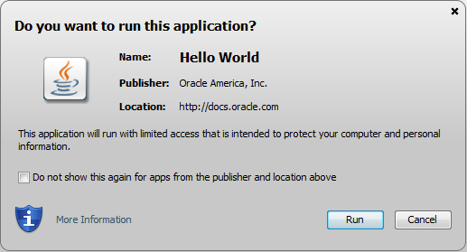

This topic describes the security level of the Java Client, policy files, permissions, and security dialogs. These security features provide users with some control over what Java and JavaFX applications are allowed to run.
This topic contains the following sections:
Using the Java Control Panel or installation options, the user can control, the level of security that is used when running Java and JavaFX applications that are embedded in a web page or launched from a web page, collectively referred to as Rich Internet Applications or RIAs. The user can select from three levels of security, including disabled, where no RIAs are allowed to run in the browser. Setting the security level does not affect desktop (also called stand-alone) applications.
Before the browser plug-in software attempts to run a RIA, it verifies that the JRE version is at or above the security baseline for that family and that the age of the JRE is recent. If the JRE is determined to be below the security baseline, or if unable to verify the baseline and the current date is past the JRE Expiration Date, additional security warnings are displayed, or in some cases, the RIA is blocked. If the RIA is not automatically blocked, the user has the option to block the RIA, to continue running the RIA, or to go to java.com to download the latest release. The JRE expiration date can be found in the release notes for JDK Update releases starting with JDK 7u21.
The JRE relies on periodic checks with an Oracle Server to determine if the JRE is still considered up-to-date with all of the available security fixes (above the security baseline). From the 7u10 release onwards, all JREs contain a hard-coded expiration date. The expiration date is calculated to end after the scheduled release of the next Critical Patch Update.
JREs that are unable to contact Oracle Servers for an extended period of time now offer additional protection after a reasonable period and do not continue to behave as if they were up-to-date with regard to security fixes.
To test what happens when the JRE falls below the security baseline or expires, see Section 21.1.2.1, "Testing a JRE Below the Security Baseline" and Section 21.1.2.2, "Testing an Expired JRE".
To see how applications behave when the JRE falls below the Security Baseline, follow these steps:
Install the JRE that you want to test.
Remove the following files, if they exist:
<user-deployment-home>/deployment.properties
<user-deployment-home>/security/baseline.versions
<user-deployment-home>/security/update.timestamp
See Section 19.1, "Deployment Configuration File (deployment.properties)" for the location of the deployment.properties file on each supported platform.
From the command line, run the following command:
javaws -SSVBaselineUpdate
The <user-deployment-home>/security/baseline.versions file is downloaded.
Edit the <user-deployment-home>/security/baseline.versions file.
Set the version number of the JRE for the JRE family that you are testing to a value greater than the version that you are testing. For example, if you are testing JRE version 8u5, set the version in the file to 1.8.0_99. The JRE periodically updates this file, so make the file read-only to prevent your changes from being overwritten.
Run any RIA.
The Java Update Needed prompt is shown. Click Later to continue running the application. See Why do I see the Java Update Needed messages? on java.com for information on this prompt.
When you are done testing, repeat Step 2 and Step 3 to restore the correct version of the files.
To see how applications behave after the JRE has expired, follow these steps:
Install the JRE that you want to test.
Remove the following files, if they exist:
<user-deployment-home>/deployment.properties
<user-deployment-home>/security/baseline.versions
See Section 19.1, "Deployment Configuration File (deployment.properties)" for the location of the deployment.properties file on each supported platform.
Set the system to a future date beyond the expiration date of the JRE. Get the expiration date from the Release Notes for the release that you are testing.
Run any RIA.
The Java Update Needed prompt is shown. Click Later to continue running the application. See Why do I see the Java Update Needed messages? on java.com for information on this prompt.
If you prefer to completely disable access to Java through the browser, de-select the Enable Java content in the browser option in the Java Control Panel under the Security tab. See Section 18.4, "Security" for information.
If you do not need to run Java through a browser, consider installing the Server JRE, which does not contain the Java Plug-In. See Server JRE (Java SE Runtime Environment) 7 Downloads for information.
Note: These settings affect all browsers that use Oracle's Java browser plug-in. They do not affect stand-alone applications.
The Security tab of the Java Control Panel contains a Security Level setting that controls the restrictions placed on any RIA that is run from the web. The user can select a level of High or Very High. This setting determines if a RIA is allowed to run and if so, the warnings you must accept before the RIA is started. The warnings contain information about the signing status of the RIA, the location of the RIA, and whether the RIA is requesting enhanced permissions to run outside the security sandbox.
At the Very High setting, only RIAs that are signed with a valid certificate that is located in the Signer CA keystore, and include the Permissions attribute in the manifest for the main JAR file are allowed to run with security prompts. At the High setting, RIAs that are signed with a valid certificate that is located in the Signer CA keystore, and include the Permissions attribute in the manifest for the main JAR file are allowed to run with security prompts. Applications are also allowed to run with security prompts when the revocation status of the certificate cannot be checked. For more information on security levels, see Section 18.4, "Security."
The default security level is High.
The ability to run applications is also affected by the settings described in Section 21.1.5, "Security Options for a Secure Execution Environment."
The following options are available in the Advanced tab of the Java Control Panel to set the behavior when a RIA is started:
Allow user to grant permissions to signed content
Show sandbox warning banner
Allow user to accept JNLP security requests
Don't prompt for client certificate selection when no certificates or only one exists
Warn if site certificate does not match hostname
Show site certificate even if it is valid
See Section 18.5, "Advanced" for more information on advanced options.
|
Note: These options are available only on Microsoft Windows. |
Starting in the JDK 7u10 release, arguments for command line installation are available for setting the security level for Java in the browser. Admin privileges are required to install the JRE.
On installation, the WEB_JAVA argument has the following effect:
WEB_JAVA=1 enables Java in the browser
WEB_JAVA=0 disables Java in the browser
On installation, the WEB_JAVA_SECURITY_LEVEL argument has the following effect:
WEB_JAVA_SECURITY_LEVEL=VH sets the security level to very high
WEB_JAVA_SECURITY_LEVEL=H sets the security level to high
After installation of the JRE, you can check the Java Control Panel to verify that the security level settings are correct.
This information also applies to RIAs that contain calls between privileged code and sandbox code. For more information, see Chapter 25, "Mixing Privileged Code and Sandbox Code."
RIAs are by default run in a secure sandbox that defines the set of permissions that code in an untrusted application is granted.
The standard Java policy files can be used to enhance the permissions granted to untrusted applications. In addition to $JRE_HOME/lib/security/java.policy (used by all java programs), applications and applets loaded by Java Web Start and Java Plug-in load an additional policy file, whose location can be configured by the deployment configuration property: deployment.system.security.policy.
The default sandbox, combined with the permissions granted by these policy files, if they exist, determine the permissions granted to untrusted code.
One other policy file, whose location is determined by the deployment configuration property deployment.security.trusted.policy, can be used to restrict the permissions granted to trusted code. When this property is not set, which is the default, trusted code will be granted the AllPermission permission. When this property is set, trusted code will be granted only the permissions granted to untrusted code, plus any other permissions granted by the policy file pointed to by this property.
The deployment configuration also has several properties that determine how and if code can be trusted. Normally, any signed JAR file in Java Plug-in, and any set of signed JAR files in Java Web Start that are listed in a JNLP file requesting the AllPermission permission, will be granted trust by the user after the certificate chains have been verified and shown to the user in a security dialog.
The deployment configuration property deployment.user.security.trusted.certs points to a certificate store that contains the certificates already accepted by the user.
The deployment configuration property deployment.system.security.trusted.certs can be configured to point to a certificate store of certificates pre-accepted by the system administrator.
If a JAR file (in Java Plug-in) or set of JAR files in a JNLP file requesting the AllPermission permission (in Java Web Start) is signed by a certificate that is in one of these stores, it will be trusted.
The deployment configuration property deployment.security.askgrantdialog.show can control if the user is permitted to grant trust to new code signed with new certificates.
Java Plug-in and Java Web Start support browser keystore in Internet Explorer and Firefox. Certificates and keys in browser keystores are used for the following purposes:
Signature signing verification
HTTPS server authentication
HTTPS client authentication
If the certificates and keys are on the smart cards, they are also recognized by Java Plug-in and Java Web Start if exposed in the browser keystore.
By default, browser keystore support is enabled. Users can configure the support through the Advanced tab in the Java Control Panel. See Section 18.5, "Advanced" for information.
On Windows, browser keystore is supported through Internet Explorer. Certificates and keys in Internet Explorer are automatically recognized by Java Plug-in and Java Web Start when Java and JavaFX applications are deployed on Windows.
This feature is supported only with Internet Explorer 5.0 or higher.
On Linux and Solaris, browser keystore is supported through Mozilla. Certificates and keys in Mozilla are recognized by Java Plug-in and Java Web Start when Java and JavaFX applications are deployed on Linux and Solaris.
Support for Mozilla keystore requires a Mozilla library called JSS (Network Security Services for Java). By default, JSS is a separate component that does not ship with Mozilla -- it is the responsibility of the deployer to install JSS with Mozilla. Java Plug-in and Java Web Start enable the Mozilla keystore support after JSS is deployed.
This feature is supported only with Mozilla 1.4 or higher and JSS 3.2 or higher, assuming both Mozilla and JSS are compiled using the same compiler on the same platform.
To install on Windows, follow these steps:
Create jss directory under Mozilla's installed directory.
Copy JSS JAR file into the jss directory.
Copy JSS native library DLL into Mozilla's installed directory.
To install on Solaris or Linux, follow these steps:
Create jss directory under Mozilla's installed directory.
Copy JSS JAR file into the jss directory.
Copy JSS native library .so into Mozilla's installed directory.
Set environment variable MOZILLA_HOME to Mozilla's installed directory in Mozilla's launch script.
Change environment variable LD_LIBRARY_PATH to include Mozilla's installed directory in Mozilla's launch script.
The Root Certificate Authority certificate stores are the union of the certificate stores in the files pointed to by the properties: deployment.user.security.cacerts and deployment.system.security.cacerts. By default deployment.system.security.cacerts points to the cacerts file in the jre/lib/security directory. deployment.user.security.cacerts points to a file that contains any additional cacerts imported into it using the Certificates dialog in the Security tab of the Java Control Panel.
If the deployment.security.askgrantdialog.show property allows it, and the code is signed with certificate chains that can be properly validated, the users are then prompted to grant trust to the code. The following sections describe the security dialogs.
Beginning with the 7u21 release, users are notified when a RIA is launched with a security prompt similar to the following screen shot.
Figure 21-1 Security Dialog for a Trusted Application
Depending on the RIA, the security prompt shows the following information:
Name of the RIA, or notification that the application is unsigned.
The name that is shown is the value of the Application-Name attribute in the JAR file manifest. If the Application-Name attribute is not present, the value for the Main-Class attribute is used. If neither attribute is present in the manifest, no title is shown in the security prompts. Titles are not shown for unsigned RIAs. See Section 24.3, "Application-Name Attribute" for information.
Warning when an out-of-date JRE is being used.
For enterprises that manage the update process of user's systems, the deployment property deployment.expiration.check.enabled can be set to suppress the warnings for out-of-date JREs. See Chapter 19, "Deployment Configuration File and Properties" for information.
Information about the publisher.
If the application is self-signed or signed by an unknown authority, the publisher is shown as UNKNOWN.
Warnings about the certificate.
If the certificate is expired, revoked, or the server that tracks which certificates were revoked cannot be accessed, the prompt shows a warning. A warning is also shown if the certificate is not valid until a future date.
Location from which the application is accessed.
The value is either a URL for applications that are accessed from a website, or a directory for applications that are accessed from a local drive.
Level of access required by the application.
Limited access restricts the application to the security sandbox, unrestricted access provides the application with access to resources on the user's system.
Warning about missing JAR file manifest attributes.
JAR file manifest attributes are available to provide additional protection for an application. The warning indicates that the manifest is missing a recommended attribute. See Chapter 24, "JAR File Manifest Attributes for Security" for information.
For unsigned or self-signed applications, a checkbox that the user must select before the Run button is enabled.
Option to not show the prompt again.
For signed RIAs, future prompts for this RIA and RIAs from the same location that are signed with the same certificate can be turned off. If the RIA is a sandbox application, then the prompt is turned off only for other sandbox applications that are signed with the same certificate. When shown, click Show Options to access the option to turn off the prompt.
Prompts that were previously hidden can be restored through a button on the Security tab of the Java Control Panel. See Section 18.4.4, "Restore Security Prompts" for information.
Buttons to Run the RIA, Cancel the RIA, and when a JRE is out of date, to Update to the latest JRE.
For a description and examples of the security prompts, see "What should I do when I see a security prompt from Java?" on java.com.
The best experience for the user is when the RIA is restricted to the security sandbox and is signed with a current certificate from a trusted certificate authority. Clicking Run is all that is needed from the user to run the RIA.
As conditions become less secure, warning messages become stronger, and in some cases, more action is needed by the user, as described for the following situations:
If the RIA is signed with a certificate from a trusted certificate authority, but requires unrestricted access to the user's system, the prompt warns the users about the risk of running the RIA. Clicking Run starts the RIA.
If the RIA is signed with a certificate and the revocation status of the certificate cannot be checked, the prompt provides stronger warnings about the risk of running the RIA. The user must select the option to accept the risk, which enables the Run button, then click Run to run the RIA.
Additional warnings are shown in some cases, such as when sandbox code attempts to access privileged code, or a RIA attempts to access resources that it does not have permission to access. These warnings require additional responses from the user.
For guidelines on deploying your RIA, see Deployment Best Practices in the Java Tutorial. For information on how the deployment of RIAs is handled, see Chapter 22, "Rich Internet Application Deployment Process.".
The Java Control Panel can be used to set options that are related to the security prompts. The Security tab provides an option to block Java content from running in a browser. The Security Level setting determines if the applet is automatically blocked and what level of prompting the user receives if the RIA is not blocked. See Section 18.4, "Security" for more information.
The Advanced tab provides options for managing RIAs:
Secure Execution Environment options provide control for allowing or prohibiting users from granting privileges. If the user is not allowed to grant privileges, the security prompt is not shown and the app or features of the app are blocked.
Mixed code security verification options provide control for showing or hiding prompts that warn of mixed code. If the prompts are hidden, some features might be blocked without any notice to the user.
See Section 18.5, "Advanced" for more information.
One final setting can be used to customize the user experience in Java Web Start. By default the sandbox does not include the AWTPermissionshowWindowWithoutWarningBanner. Without this permission, all top-level windows will contain the awt banner "Java Application Window" or "Java Applet Window". The deployment configuration property deployment.security.sandbox.awtwarningwindow can be used to add this permission to untrusted code.
For a detailed discussion of properties, see Chapter 19, "Deployment Configuration File and Properties."
For details about security in the Java Control Panel, see Section 18.4, "Security."